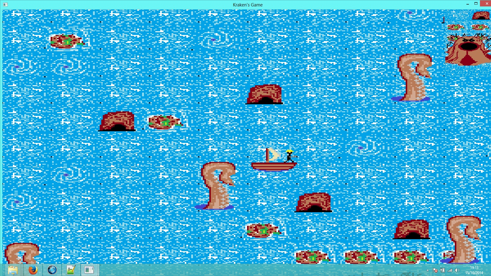
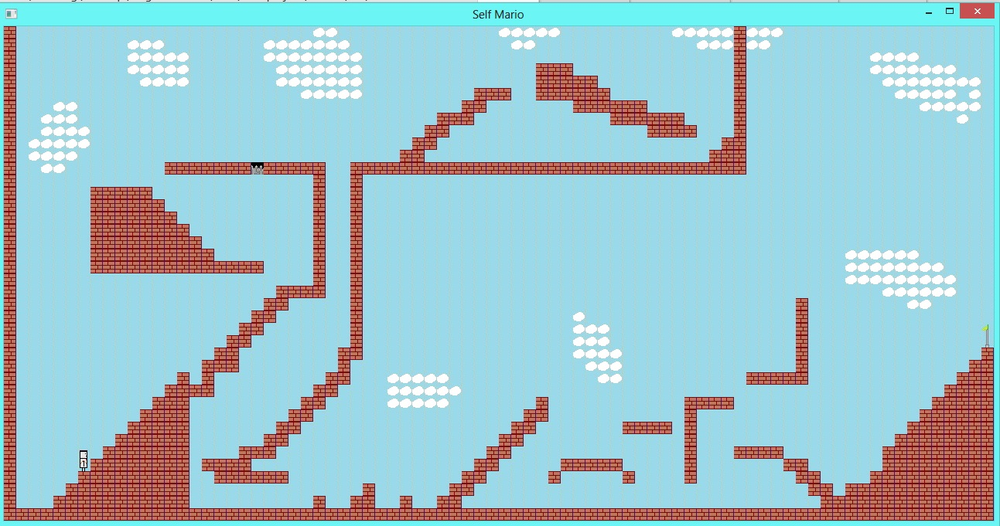

The Free Software Foundation
 Le logiciel sous licence propiètaire est le vice absolu du monde informatique. La création de logiciel doit être libre, profiter à tous et encourager les autres à
l'améliorer, à le reprendre et à eux-même publier sous licence libre leur modifications. C'est un cyclone vertueux qui est naît et qui ne cesse de balayer
les esprits emprisonnés dans leur béatitude dont l'oeil n'est autre que Richard Matthew Stallman
. Fondateur de la FSF, la licence GNU prend aujourd'hui tout son sens, ses protégés se multiplient et le libre croît à en effrayer les plus grands !
Ne soutenez plus les actions lugubres des grandes firmes qui s'imposent auprès des constructeurs et font payer les distributions libres pour avoir un accès
plus aisé auprès de leur UEFI pseudo-sécuritaire.
Le logiciel sous licence propiètaire est le vice absolu du monde informatique. La création de logiciel doit être libre, profiter à tous et encourager les autres à
l'améliorer, à le reprendre et à eux-même publier sous licence libre leur modifications. C'est un cyclone vertueux qui est naît et qui ne cesse de balayer
les esprits emprisonnés dans leur béatitude dont l'oeil n'est autre que Richard Matthew Stallman
. Fondateur de la FSF, la licence GNU prend aujourd'hui tout son sens, ses protégés se multiplient et le libre croît à en effrayer les plus grands !
Ne soutenez plus les actions lugubres des grandes firmes qui s'imposent auprès des constructeurs et font payer les distributions libres pour avoir un accès
plus aisé auprès de leur UEFI pseudo-sécuritaire.
Des projets inachevés
Le jeu du kraken

Le jeu du Kraken est un projet inachevé qui m'a occupé tout l'été 2012. Je voulais faire un premier jeu innovant, sans trop de difficulté afin de mettre en place
mon savoir quant à la nouvelle bibliothèque utilisée (SFML). Ca a été génial de le programmer, mais à cette époque je ne savais encore pas coder un bout
de programme proprement et commenter comme il faut.
Le principe du jeu réside dans un héros graphique tétra-inexistant (quatre directions mal raccordées) qui vogue sur les océans sur un bateau armé d'explosif à la recherche
du kraken. Ce dernier l'attaque aléatoire à une fréquence proportionnelle à le vie lui restant. Appuyer sur espace provoque une charge brève et fait sauter le navire au
moindre obstacle, y compris si cet obstacle est le kraken ! Un jeu assez répétitif mais non moins compliqué puisqu'avant de mourir ce dernier se déchaine chaque seconde,
laissant le navigateur slalomer entre les tentacules. Le projet fut abandonné à la fin des vacances et laissé avec tous ses bogues.
Le mario like

Mon tout premier jeu ! Je le voulais complet avec un maximum de difficulté ! Puis les cours sont revenus, la terminale m'a possédé du début à la fin puis un bogue de vitesse
incorrigible m'a découragé dans l'idée de le reprendre; ça et le code en pseudo-POO très laid incompréhensible, j'ai meilleur temps d'en refaire un... Et c'est en cours !
Le concepte et simple, je voulais un moteur audio (bien trop présent pour le coup) qui réagissent aux évènements; résultats tomber dans les pics provoque un bruit de chien qui croque,
tombé dans la lave un bruit de boue à bulle etc. Le jeu était très peu drôle à vrai dire, mais le premier Editeur que j'ai fait m'a rendu fier pendant plusieurs semaines, il était
très fonctionnel bien que bogués par un manque de connaissance.